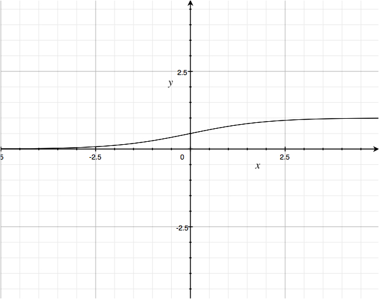
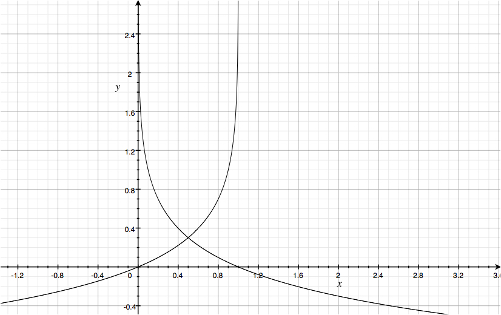

监督学习 VS. 非监督学习
监督学习和非监督学习的区分原则很直观: 给定训练数据的同时，是否也给了每个数据的”正确结果”。举例来说，对于一个图像分类问题，在给定图像的同时，还会给出图像属于哪个分类的说明，这就属于监督学习；而对于聚类算法来说，只是给出一堆数据，要求把数据按照相似性分成几个部分，这就是非监督学习。
强化学习通常被看成是与监督学习和非监督学习并列的一种学习方式。
理论重点
线性回归
线性回归部分，介绍了损失函数、梯度递减的概念，是整个机器学习中最重要的基础。
损失函数又叫目标函数，可以看作我们的模型预测值与实际值之间差距的大小，损失函数值越小，说明我们的模型越正确。所以，解决一个机器学习问题的总体思路就是:先得到损失函数，然后调整参数，以使目标函数值达到最小。
线性回归的损失函数是
$$J(\theta) = \frac{1}{2m}\sum{i=1}^m(h\theta(x^{(i)})-y^{(i)})^2$$
其中，h(x)是我们的假设函数模型
$$h_\theta(x) = \theta_0 + \theta_1x_1 + \theta_2x_2 + \cdots + \theta_nx_n$$
梯度递减就是寻找损失函数最小值的一种方法。其过程类似于我们从山上一步一步走到山谷。数学上来说，就是各个方向的偏导数同步减小的过程。其中，步长和步数是可以调整的参数。步长大小要合适，长度太长的话，会容易”跑到对面山上去”，整个地图乱跑；太小的话，在一定的步数之內，可能尚未到达最小点。到达最小点之后，将会在附近徘徊。
偏导很容易计算:
$$ \frac{\partial{J(\theta)}}{\partial{\theta0}} = \frac{1}{m}\sum{i=1}^m(h_\theta)(x^{(i)}-y^{(i)})$$
$$ \frac{\partial{J(\theta)}}{\partial{\thetaj}} = \frac{1}{m}\sum{i=1}^m(h_\theta)(x^{(i)}-y^{(i)})x_j^{(i)}$$
因此
$$\theta_0 = \theta0 - \alpha\frac{1}{m}\sum{i=1}^m(h_\theta)(x^{(i)}-y^{(i)})$$
$$\theta_j = \thetaj - \alpha\frac{1}{m}\sum{i=1}^m(h_\theta)(x^{(i)}-y^{(i)})x_j^{(i)}$$
这种递减方式叫做批量梯度递减，因為每次递减都需要所有的训练数据参与，当数据量很大的时候，速度会比較慢。
另外，最后到达的，不一定是最小值，可能只是极小值。
$\theta$ 要统一賦值，如果有三个参数要更新，必須要等到三个参数的新值都计算好以后，再一起賦值。
归一化：如果两种特征的值域相差很大，需要将其统一到［-1,1]的范围內。要注意归一化和正则化的区别。
逻辑回归
逻辑回归本貭上是个分类问題，引入了sigmoid函數：

$$ g(z) = \frac{1}{1+e^{-z}} $$
整合输入之后模型变成：
$$ h_\theta(x) = \frac{1}{1+e^{-\theta^Tx}} $$
线性回归的损失函数是累计误差平方然后求平均，逻辑回归不一样，逻辑回归是靠log函数实现的。

sigmoid函数将模型的值域固定在0到1之间，在损失函数中，该值域变成了作用域。从上图可以看出，若y=1，$h_θ(x)$接近1时，损失函数几乎为0，反之，当其接近0时，惩罚将会非常快速地增长。y=0时也是一样的道理。
作业
第二周逻辑回归的作业，要求我们完成逻辑回归的代码（octave\matlab）并将其应用在两个不同的数据上。
作业第一部分logistic regression，主流程代码如下：
- 1.0 plot数据之前，需要先读入数据，数据格式如下:
0.051267,0.69956,1
-0.092742,0.68494,1
-0.21371,0.69225,1
-0.375,0.50219,1
-0.51325,0.46564,1
-0.52477,0.2098,1
-0.39804,0.034357,1
-0.30588,-0.19225,1
……
代码使用load函数把数据读入到data，然后把前两列赋给X，最后一列赋给y。
- 1.1 Visualize Data
使用find函数分别将y=0和y=1的数据index赋值给pos和neg，然后分别将index在pos和neg中的X使用不同的标记和颜色plot出来
- 1.2 Implementation
- 1.2.1 Sigmoid Function
实现Sigmoid函数，没什么难度 - 1.2.2 Cost Function && Gradient
实现损失函数和梯度，按照公式来即可 - 1.2.3 Learning parameters using fminunc
训练，并把decision boundary画了出来 - 1.2.4 Evaluating Logistic Regression
评估我们的模型准确性
- 1.2.1 Sigmoid Function